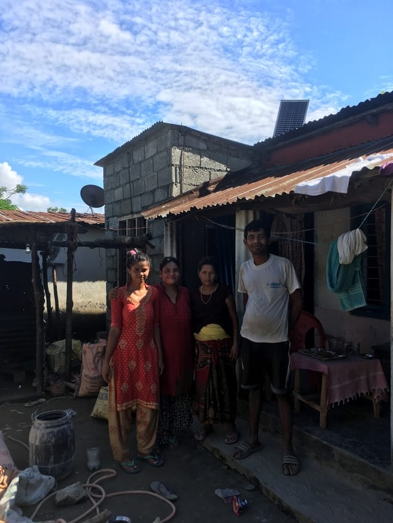
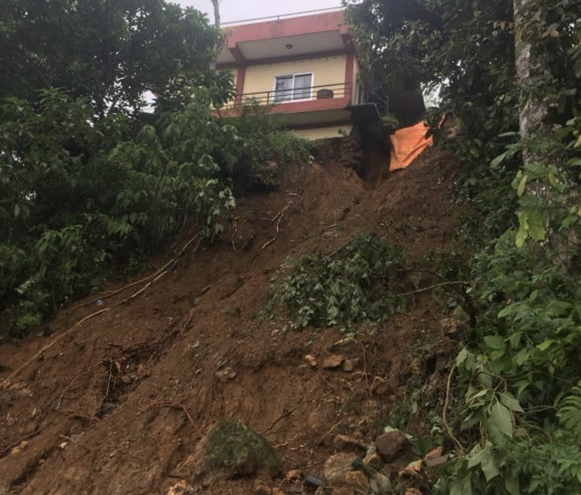

Health
Bathroom
We had a bathroom built for a family to improve sanitation and health conditions. Previously, this family had no other facilities.
We had a bathroom built for a family to improve sanitation and health conditions. Previously, this family had no other facilities.
Kitchen rebuilt after the 2015 earthquake as well as an addiditional room has been added for rental income from foreign travellers.
Providing basic food needs for 30 households affected economically by Covid-19. The coordination of the purchase and distribution of the food was done by Neema and Priya Thagar, our local partners.
After losing their kitchen in a landslide, this family of six was at a loss. With generous donations from numerous people, we were abe to build a functional kitchen for this family.
Paved a pathway linking two families with elderly members who were having mobility issues, especially during the rainy monsoon season.
Tools purchased for village workers. We provided stone and woodworking tools to local crafts people
Repairing the roof of the Gumba Stupa Buddhist Temple, damaged from monsoon rains. An important cultural and spiritual centre. The majority of the labour was done by volunteers from the village.
Restoring and repairing damage cause by landslides during the 2020 monsoon season. We also made some reinforments on at risk homes.
With all the help that has been given and that will continue to be given, a headquaters was much needed. We have aquired a building and have signed a 2 year lease. Donations will be needed for the cost of the rent and utilities.